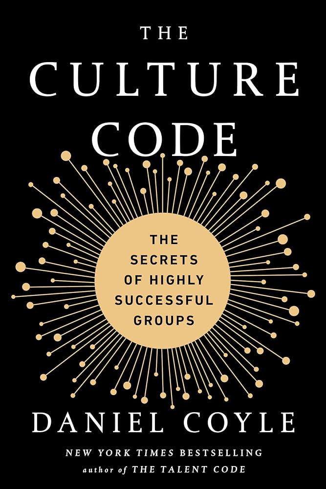
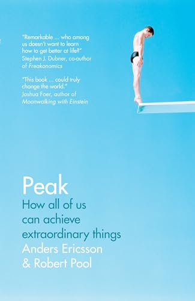

Mr. Battle's Book Club
I believe that continuous learning is essential to growth—both as a person and as an educator. Reading self-improvement literature fuels my passion for understanding human potential, leadership, and the craft of teaching. Each book I explore shapes how I approach challenges, connect with students, and evolve as a leader.
Here's a collection of books I'm exploring and have discovered along my journey.
Currently Reading
Culture Code
Culture Code explores the hidden patterns behind successful teams and organizations. Coyle reveals how the best teams build trust, establish safety, and create an environment where excellence thrives through shared purpose and belonging.

Library
Peak
Peak dismantles the myth of innate talent and reveals the science of deliberate practice. Ericsson demonstrates how focused, purposeful effort, not genetics, is what separates exceptional performers from the rest.

Refuse to Choose!
Refuse to Choose! speaks to people with many passions and shows that you do not need to pick just one path to live a meaningful life. Sher reframes curiosity as a strength and offers practical ways to build a life that honors multiple interests.